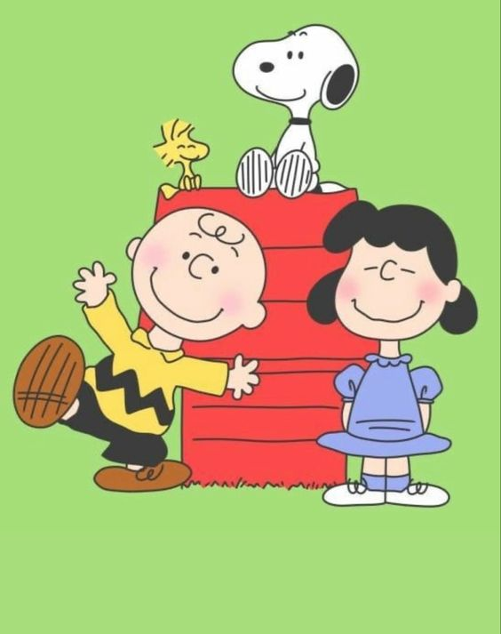
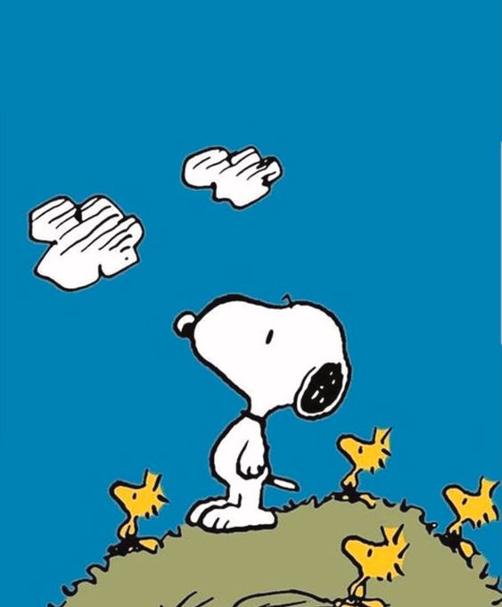

O Snoopy é um personagem icônico de quadrinhos criado pelo renomado cartunista Charles Schulz. Ele é um cão beagle antropomórfico e figura como um dos protagonistas na história em quadrinhos Peanuts, também conhecida como Minduim ou Charlie Brown e sua Turma. Desde a sua primeira aparição em 1950, o Snoopy conquistou o coração de milhões de fãs ao redor do mundo com sua personalidade única e cativante. Dotado de uma imaginação extraordinária, o Snoopy é conhecido por suas fantasias e aventuras, muitas vezes retratado como um piloto de avião destemido ou um escritor talentoso que cria histórias fantásticas em sua máquina de escrever, situada em seu icônico telhado vermelho. Essa capacidade de sonhar e se transportar para mundos imaginários é uma das características mais marcantes do Snoopy, que o torna um personagem profundamente querido e inspirador. Além de suas façanhas imaginativas, o Snoopy também é reconhecido por sua personalidade encantadora e por sua lealdade aos seus amigos, especialmente ao seu dono, Charlie Brown, e à turma de Peanuts, que inclui personagens como Woodstock, Linus, Lucy, Schroeder e muitos outros. Juntos, eles vivem uma série de aventuras engraçadas e comoventes que abordam temas universais como amizade, amor, esperança e resiliência. Ao longo das décadas, o Snoopy se tornou um ícone da cultura pop, sendo adorado por pessoas de todas as idades e inspirando gerações com seu carisma e positividade. Sua imagem é frequentemente associada a uma sensação de nostalgia e alegria, lembrando-nos dos tempos mais simples da infância e da importância de manter viva a imaginação e a criatividade em nossas vidas. Assim, o Snoopy continua a conquistar novos corações e a encantar públicos de todo o mundo com seu charme atemporal e sua capacidade de nos fazer sorrir, mesmo nos momentos mais difíceis. Ele é verdadeiramente um dos personagens mais amados e reconhecíveis da história dos quadrinhos, deixando um legado duradouro que continuará a inspirar e alegrar as pessoas por muitas gerações vindouras.
Sobre o Snoopy

